Charts¶
Open a Chart¶
Chart Panel¶
A Chart Panel displays price movements in different forms of graphs for one or more instruments with an indication of the current price for a certain period of time. There are window boxes if you need further customization and technical analysis for trading.
There are two dynamic windows on the right side:
- Red box shows the current bid price (To sell).
- Green box shows a current ask price (To buy).
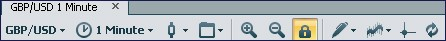This bar will contain different tools that allow you to create charts, as well as open and close certain tool boxes within the upper portion.
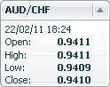There is a window (with a drop-down tab), which provides tools, date / time, the current opening / closing price (Open price / Close price) and the maximum / minimum price (High price / Low price) on the left side of the chart.
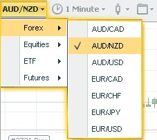 When click the button that displays the instrument (FX or CFD), you will see a list of instrument for choosing
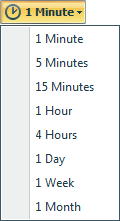 By clicking the time button, you will be able to select the time interval that you wish to view.
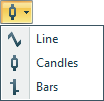 Here is where you are able to choose what kind of graphs you prefer.
| Line Chart | Candlestick Chart | Bars Chart |
|---|---|---|
| 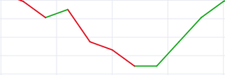 | 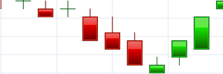 | 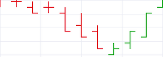 |
Note
All charts were made with enhanced coloring for better viewing.
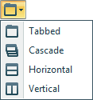 Here you will have the option to choose the location of the different charts, simply choose a format that suits you best.
These are the zoom in and zoom out buttons.
Here you will be able to lock/unlock the automatic scrolling motion of charts. If the chart is unlocked, the mouse pointer will move accordingly in the desired motion, both horizontally and vertically.
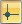 The crossing tool turns the cursor into a crosshair, allowing you to pinpoint exact locations on the chart. Point the center of the cross anywhere on the chart (point A); press the left mouse button to set the start point of your measurement. Without letting go of the left mouse button, drag the cursor across the chart (point B). To the right of the cursor you will see the following information in such order: Distance in bars / Distance in Pips / Current rate.
This information changes continuously as you move the cursor:
Description:
Distance in bars - the amount of the bars between the start point and the current cursor location.
Calculation: Distance in bars = | <Bar number of B> – <Bar number of A> |
Distance in pips - the difference in rates between the start point and the current cursor location
Current rate - the rate of the current cursor location.
When you release the left mouse button, the cross and the text label disappears.
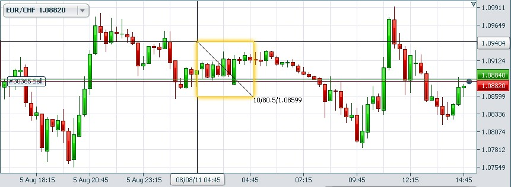If you want to update your chart, press this button.